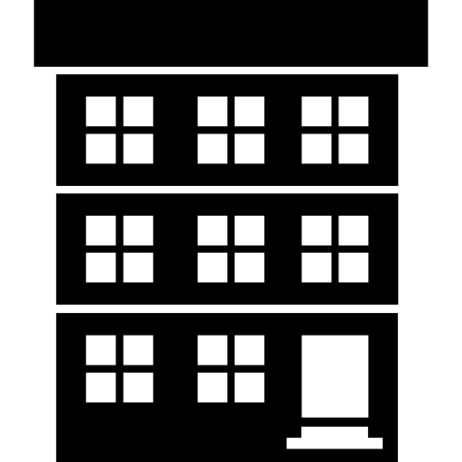
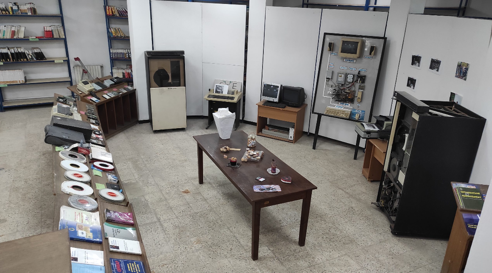
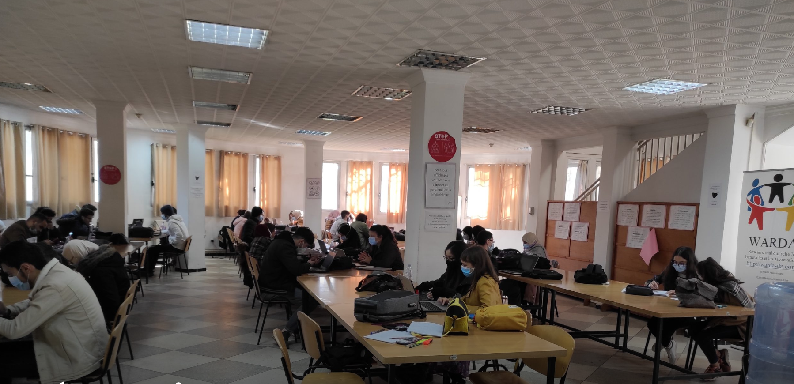
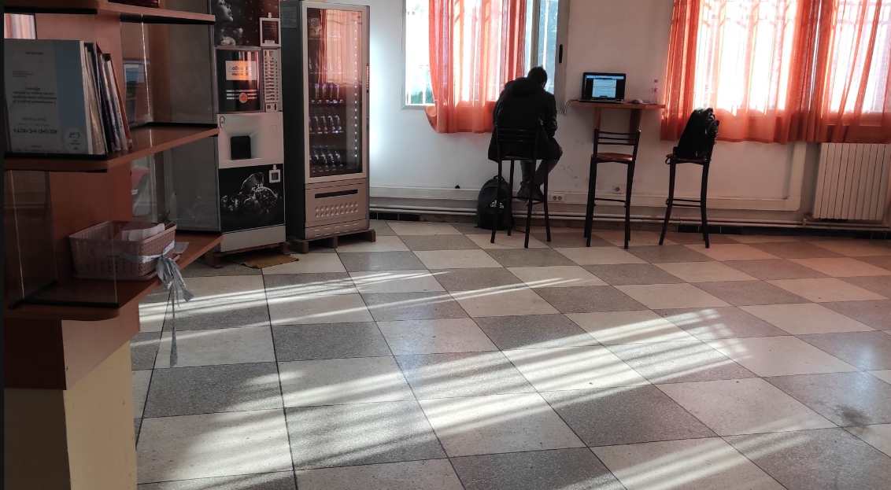
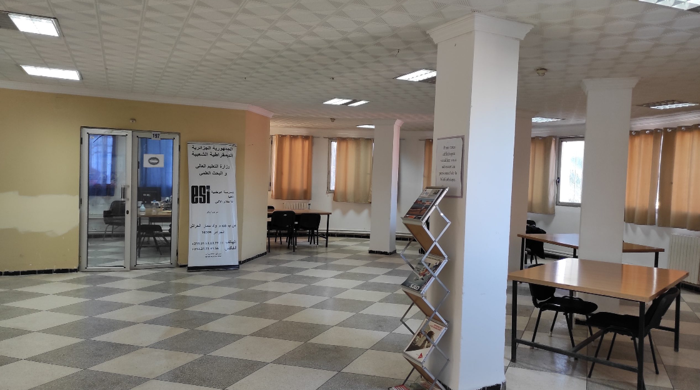
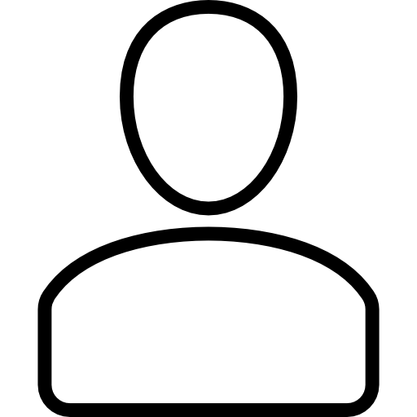

Attaché de Bibliothèques universitaires de niveau 1
Trois agents bibliothécaires
 Elle est aménagée en trois niveaux :
Sous-sol :
Contient le musée de la Bibliothèque regroupant des moyens (documents, matériels, logiciels) relatant l’histoire de l’informatique.
Une partie du fonds documentaire (anciennes versions et éditions).

Rez-de-chaussée :
Une grande salle de lecture pour les étudiants, pouvant accueillir 160 étudiants.
Deux micros ordinateurs pour la recherche documentaire.
Un téléviseur destiné à l’affichage.
Un registre de doléance.



1er étage :
Une salle de lecture pour les enseignants.
Des bureaux administratifs.
Un guichet dédié aux prêts et restitutions des livres.
Les missions :
Elle a pour missions essentielles :
Acquisition d’ouvrages selon les besoins pédagogiques de la communauté universitaire de l’établissement.
Gestion et traitement du fonds documentaire.
Diffusion de l’information scientifique et technique.
Orientation des usagers.
Inscription des chercheurs au système national de documentation en ligne SNDL.
Statistiques mensuelles des prêts et d'adhérents à la bibliothèque :
Chaque fin du mois, il est mis à la disposition des adhérents des statistiques relatives:
Aux livres empruntés
Au nombre d'adhérents emprunteurs
A l’ouvrage le plus emprunté au cours du mois en question
 Adhérents :
Première année Classes Préparatoires: 289
Deuxième année Classes Préparatoires: 245
Première année Second Cycle: 209
Deuxième année Second Cycle: 156
Troisième année Second Cycle: 217
Total: 1116
Evénements :
Chaque année la bibliothèque organise :
Au mois d’Avril : Une journée d’information pour la préparation de la fiche technique (Bon de commande), concernant les nouveaux ouvrages est organisée, son objectif est le recueil des besoins des étudiants et des enseignants
Au mois de Mai : Des portes ouvertes relatives aux nouvelles acquisitions des ouvrages, l’objectif est la diffusion de l’information (durée 3 à 4 jours ) par rapport aux nouveaux ouvrages acquis


 Les missions :
Les missions :